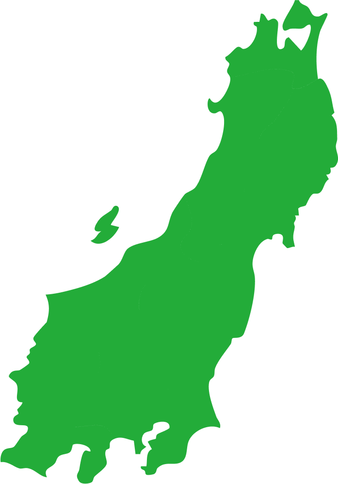
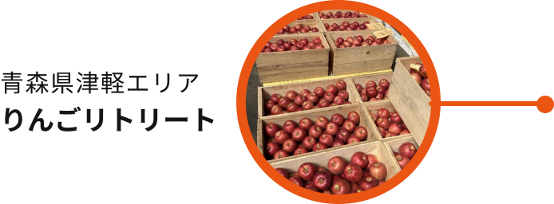
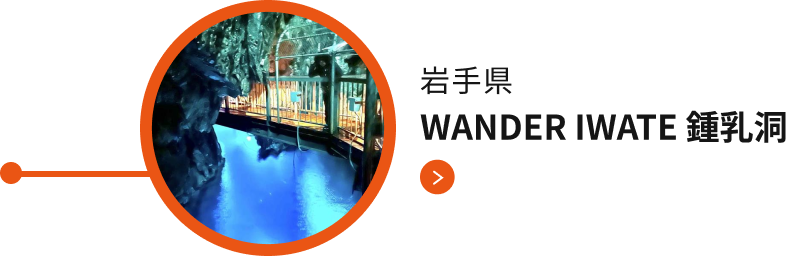
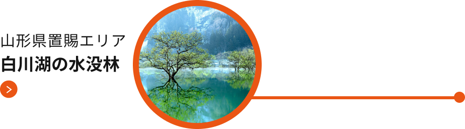
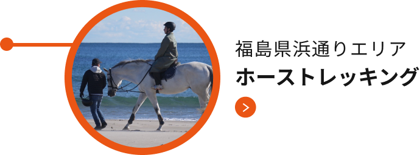
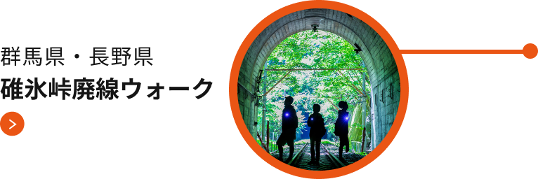

地域の皆さまとともに取り組む、
東日本エリアの未来づくり


宝ものプロジェクト
とは？
宝ものプロジェクトとは、
JR東日本が地域の皆さまと、
目的地づくり産業づくりくらしづくりを通して、
地域の未来づくりに取り組む
プロジェクトです。
まだ知られていない地域の資源＝「宝もの」を
地域の皆さまと探し、
それを磨きあげ、
多くの方に
知ってもらい、来てもらい、
好きになってもらいたい、
そんな思いを込めて取組みます。
宝ものプロジェクト
関連コンテンツ


宝ものMAP
各エリアでの
「宝ものプロジェクト」の
取組みをご紹介します。

-

-

-

-

-



宝ものBook
Cover
1Page
2Page
3Page
4Page
5Page
6Page
7Page
8Page
Last page